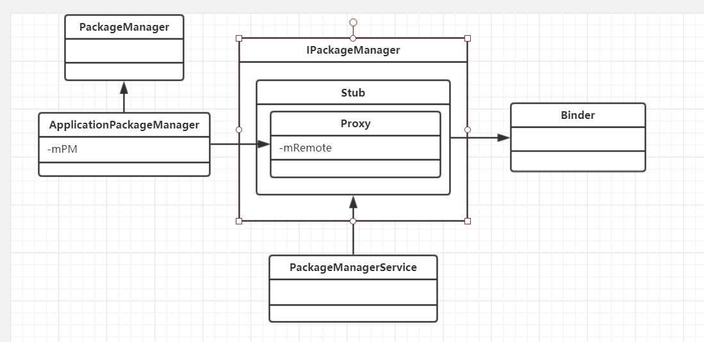
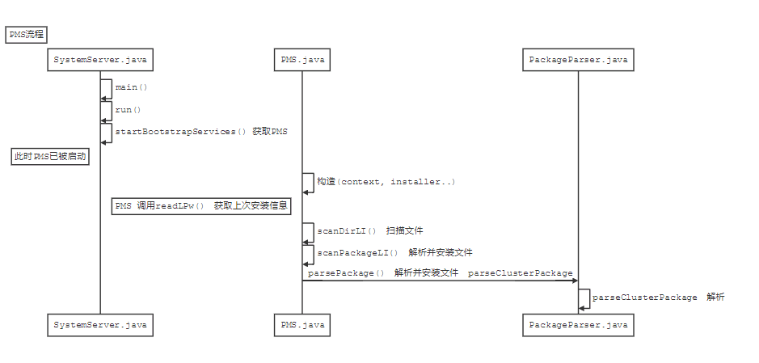

Android应用管理第一步
大致流程
- PackageManagerService启动时候，扫描所有APK 文件和Jar包，把它们的信息读出来，保存在内存中，这样就能迅速找到各种应用和组件的信息
图示
PMS

流程图

SystemServer
1 | public static void main(String[] args) { |
PackageManagerService
1 | public PackageManagerService(Context context, Installer installer, |
PackageParser
1 | public Package parsePackage(File packageFile, int flags) throws PackageParserException { |
小知识
- 系统应用指位于
/sysem/app(系统级别的应用)和/system/priv-app(Android4.4开始出现的,存放底层系统应用)目录下的应用 - ５.0之后，PackageManagerService不会监控安装应用的目录，意味着无法在使用向这种目录复制apk的方式安装应用
- 通常系统应用是不能删除的，但是可以升级。升级的办法是安装一个包名相同，但是更高版本号的应用在
/data/app目录下。对于这种升级情况，Android会在/data/system/packages.xml文件中用标签<update-package>记录被覆盖的系统应用的信息 - /data/system/packages.list记录了App的uid和数据路径
- Android5.0之前！扫描时，遇见没有优化的文件还会执行转换工作，将app文件从dex格式转换成odex格式。
- Android5.0之后！扫描时，遇见没有优化的文件还会执行转换工作，将app文件从dex格式转换成oat格式。
- 本文链接：https://www.wl960127.top/posts/23585/
- 版权声明：本站内容均为个人学习笔记,不涉及商业用途，仅提供学习参考,第三方摘录已署名链接,未署名请评论添加,转载署名来源即可。
分享